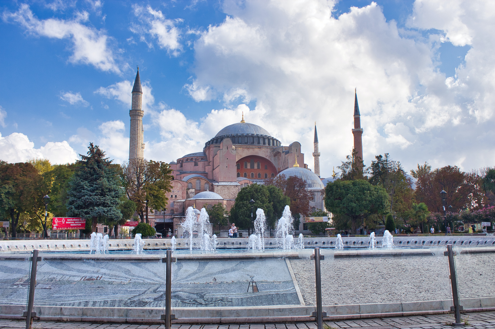

عنوان الجولة: رحلة إلى مدينة إسطنبول في تركيا.
إسطنبول هي واحدة من أكبر و أجمل مدن تركيا وهي مصنفة ضمن أكثر المدن السياحية جذباً للسياح في العالم وتُعتبر إسطنبول الخيار الأول للسياح الذين يفكرون في الذهاب إلى تركيا. ستكون جولتنا في المعالم السياحية التالية:
1. متحف آيا صوفيا: عُرف في العصر العُثماني باسم الجامع الكبير الشريف لآيا صوفيا، يقع على الضفة الأوروبيَّة في مدينة إسطنبول وهو من أشهر المعالم في تركيا التي يحرص الجميع على زيارتها أثناء جولات السياحة في إسطنبول.
2. قصر توب كابي: من أفضل الأماكن السياحية في إسطنبول الموصي بزيارتها لمعرفة كيف كانت تُدار شئون الحياة والحكم في ظل الخلافة العثمانية بتركيا طيلة 4 قرون يستعرض المتحف العظيم أحداثها وتفاصيلها.
3. برج غالاتا: برج غالاتا هو برج تاريخي عريق يُقال أنه بُنِي عام 507 م ثم تعرض البرج لزلزال قوي أثر عليه تأثيراً بالغًا، بعدها تم اعادة ترميمه وبُنِي على الطراز الرومانسكي في القرن الـ 14، وفي هذا الوقت كان أطول مبنى في اسطنبول.
4. جامع أيوب سلطان: مسجد عثماني قديم موجود في منطقة أيوب في الجانب الأوروبي من مدينة إسطنبول، بالقرب من منطقة القرن الذهبي، ويقع خارج أسوار القسطنطينية، إذ بني المسجد عام 1458 أي بعد خمس سنوات من فتح القسطنطينية، وهو أول مسجد بناه المسلمون في إسطنبول بعد فتح القسطنطينية عام 1453.
1. متحف آيا صوفيا: عُرف في العصر العُثماني باسم الجامع الكبير الشريف لآيا صوفيا، يقع على الضفة الأوروبيَّة في مدينة إسطنبول وهو من أشهر المعالم في تركيا التي يحرص الجميع على زيارتها أثناء جولات السياحة في إسطنبول.
2. قصر توب كابي: من أفضل الأماكن السياحية في إسطنبول الموصي بزيارتها لمعرفة كيف كانت تُدار شئون الحياة والحكم في ظل الخلافة العثمانية بتركيا طيلة 4 قرون يستعرض المتحف العظيم أحداثها وتفاصيلها.
3. برج غالاتا: برج غالاتا هو برج تاريخي عريق يُقال أنه بُنِي عام 507 م ثم تعرض البرج لزلزال قوي أثر عليه تأثيراً بالغًا، بعدها تم اعادة ترميمه وبُنِي على الطراز الرومانسكي في القرن الـ 14، وفي هذا الوقت كان أطول مبنى في اسطنبول.
4. جامع أيوب سلطان: مسجد عثماني قديم موجود في منطقة أيوب في الجانب الأوروبي من مدينة إسطنبول، بالقرب من منطقة القرن الذهبي، ويقع خارج أسوار القسطنطينية، إذ بني المسجد عام 1458 أي بعد خمس سنوات من فتح القسطنطينية، وهو أول مسجد بناه المسلمون في إسطنبول بعد فتح القسطنطينية عام 1453.


